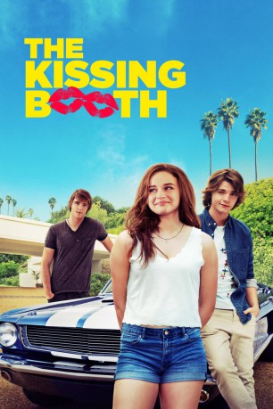

#8989 The Kissing Booth
 gesehen am 17.04.2019
gesehen am 17.04.2019
 
 IMDB-Wertung: 6.2 / 10
IMDB-Wertung: 6.2 / 10  Metascore: 0
Metascore: 0 
Als Teenagerin ist es einfach nur schwer, wenn man an der Schule zu jenen Spätzündern gehört, die in Sachen Liebe noch vollkommen grün hinter den Ohren sind. Auch Elle Evans (Joey King) gehört zu dieser Schülerspezies und wurde noch nie in ihrem Leben geküsst. Beim Frühlingsfest ihrer Schule beschließt sie dennoch (oder gerade deshalb?) eine Art Knutschkabine zu betreiben. Und so kommt es, dass sie ganz unverhofft ihren heimlichen Schwarm Noah Flynn (Jacob Elordi) küsst, einem echten Draufgänger – und leider der Bruder von Elles bestem Freund Lee (Joel Courtney) ist. Und als solcher ist er für sie tabu, denn einst haben sie und Lee einen Pakt geschlossen, dass diese Beziehung niemals Realität werden darf. Elle steht vor der schwersten Entscheidung ihres Lebens – die Freundschaft mit Lee ehren und die Regeln befolgen oder auf ihr Herz hören...
Jahr: 2018
Dauer: 105 Minuten
FSK:
Land: England Studio: NetflixTonspuren: DD5.1 - ,
Untertitel: Deutsch, Englisch,
Auflösung: 1080p (1920x874) Größe: 4014 MB
Genre: Komödie, Liebe
Regisseur: Vince Marcello
Drehbuch: Vince Marcello
Soundtrack: Patrick Kirst
Darsteller:
 Joey King als Shelly 'Elle' Evans
Joey King als Shelly 'Elle' Evans- Joel Courtney als Lee Flynn
- Jacob Elordi als Noah Flynn
- Carson White als Brad Evans
- D. David Morin als School Principal
- Jessica Sutton als Mia
- Nathan Lynn als Yearbook Guy
- Frances Sholto-Douglas als British Beauty
- Molly Ringwald als Mrs. Flynn
- Morné Visser als Mr. Flynn
 Meganne Young als Rachel
Meganne Young als Rachel- Khanya Kerwath als Science Teacher
 Robbie Tucker als (uncredited)
Robbie Tucker als (uncredited)- Megan du Plessis als Shelly 'Elle' Evans (Age 4)
- Lincoln Pearson als Lee Flynn (Age 4)
- Caitlyn de Abrue als Shelly 'Elle' Evans (Age 7)
- Jack Fokkens als Lee Flynn (Age 7)
- Stephen Jennings als Mike Evans
- Chloe Williams als Joni Evans
- Michael Miccoli als Noah Flynn (Age 9)
- Juliet Blacher als Shelly 'Elle' Evans (Age 11)
- Jesse Rowan-Goldberg als Lee Flynn (Age 11)
- Chase Dallas als Noah Flynn (Age 13)
- Hilton Pelser als Barry
- Judd Krok als Ollie
- Sanda Shandu als Randy
- Joshua Daniel Eady als Tuppen
- Bianca Bosch als Olivia
- Zandile-Izandi Madliwa als Gwyneth
- Waldemar Schultz als Mr. Lewis
- Evan Hengst als Council President
- Trent Rowe als Biggest Geek in School
- Lindsey Abrahams als Headgear Girl
- Michelle Allen als Multi Pierced Girl
- Byron Langley als Warren
- Robin Smith als Pavilion Security
Datei: X:\2018(G-M)\Kissing Booth, The (2018, FSK, 1920x874).mkv seit 16.05.2018
Festplatte: HD 2018(G-Z)-2019(A-Z)
 Es gibt insgesamt 138 Filme in der Gruppe '2018(G-M)'
Es gibt insgesamt 138 Filme in der Gruppe '2018(G-M)'